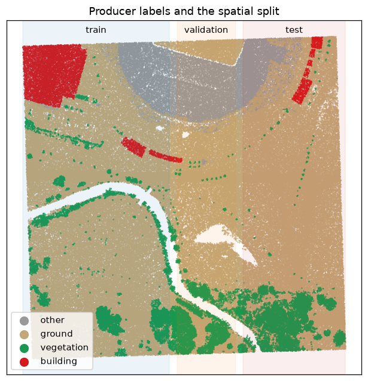
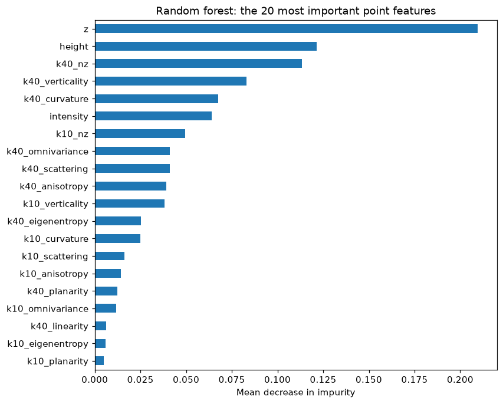
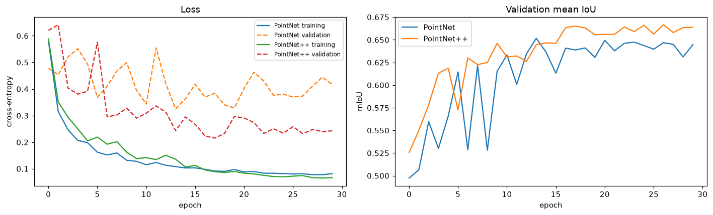
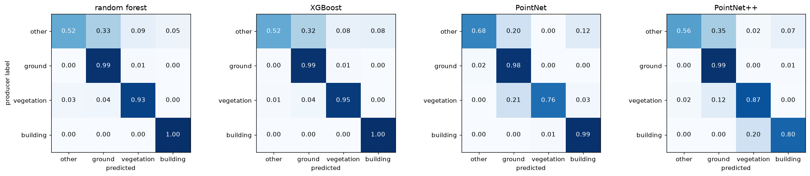
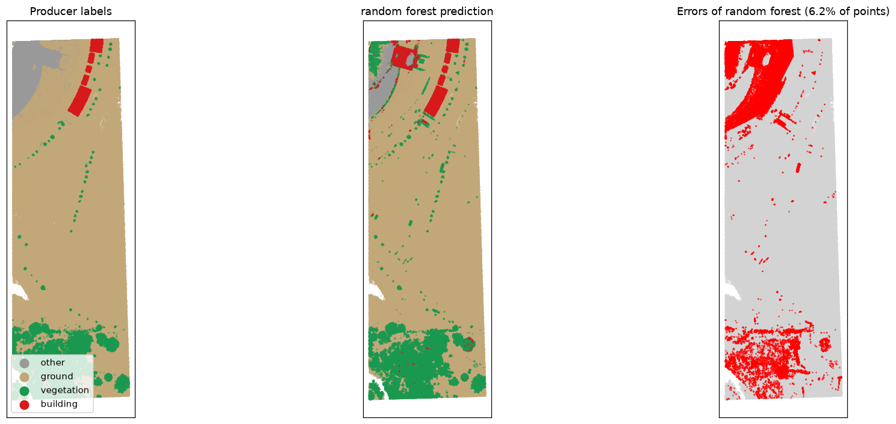
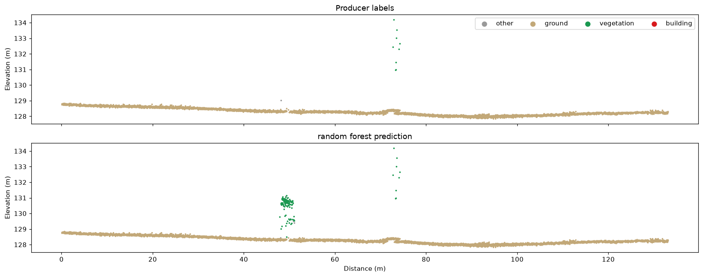

Point Cloud Classification with Machine Learning and Deep Learning
Rule-based filters handle one class at a time: ground, buildings, wires. Supervised learning labels every point at once, learning from examples which combinations of local geometry, height and return structure mark ground, vegetation, buildings and other objects. This notebook trains random forest and gradient-boosting classifiers on hand-crafted point features, and PointNet and PointNet++ deep networks on raw points on the GPU, with geolattice.rsense.lidar and geolattice.rsense.dl.pointnet. All models are trained on one part of the Autzen survey and tested on a separate area they have never seen.
Overview
The task
Semantic segmentation of a point cloud assigns a class to every point. It is the 3D counterpart of pixel classification in images, but the input is unordered, irregular and of varying density, so image methods do not apply directly. Two families of methods are in use:
Feature-based machine learning. For every point, describe its neighbourhood with hand-crafted features, then train a standard classifier (random forest, gradient boosting, support vector machine) on labelled points.
Deep learning on points. Networks consume the coordinates and attributes of the points directly and learn their own features.
Hand-crafted point features
Group
Features
What they capture
Height
Height above ground (from a DEM), absolute elevation
Ground versus objects; low versus high vegetation
Return structure
Return number, number of returns
Porous objects (vegetation) versus solid surfaces
Intensity
Echo strength
Material (asphalt, grass, roofing), partly
Covariance (eigenvalue) features
Linearity, planarity, scattering, omnivariance, anisotropy, eigenentropy, change of curvature, verticality, normal z
Local shape: lines, planes, volumes, walls
Multi-scale
The same features at several neighbourhood sizes \(k\)
Objects of different sizes (a roof edge at \(k = 10\), the whole roof at \(k = 50\))
With eigenvalues \(\lambda_1 \ge \lambda_2 \ge \lambda_3\) of the covariance of the \(k\) nearest neighbours (Weinmann et al. 2015): linearity \(= (\lambda_1 - \lambda_2)/\lambda_1\), planarity \(= (\lambda_2 - \lambda_3)/\lambda_1\), scattering \(= \lambda_3/\lambda_1\), omnivariance \(= (\lambda_1\lambda_2\lambda_3)^{1/3}\), eigenentropy \(= -\sum e_i \ln e_i\) with \(e_i = \lambda_i/\sum\lambda\).
Deep learning on point clouds
PointNet (Qi et al. 2017a) applies the same small multi-layer perceptron to every point, then a symmetric function (max pooling) over all points gives a global feature that does not depend on point order. For segmentation, each point’s own feature is concatenated with the global feature and classified. PointNet sees each point and the whole block, but no local neighbourhoods.
PointNet++ (Qi et al. 2017b) adds hierarchy: it samples centroids (farthest point sampling), groups the points in a ball around each centroid, runs a mini-PointNet on each group, and repeats at coarser levels (set abstraction); feature propagation then interpolates the features back to every point. Like a CNN, it learns local patterns at several scales.
Later networks include KPConv (kernel point convolutions), RandLA-Net (fast random sampling for large scenes), sparse voxel CNNs (MinkowskiNet) and point transformers, available in libraries such as Open3D-ML and torch-points3d.
Networks work on fixed-size blocks: the scene is cut into squares (here 20 m), a fixed number of points is sampled from each, coordinates are normalised within the block, and predictions from overlapping blocks are averaged.
Validation without leakage
Neighbouring points share almost the same features and labels. A random split of points into training and test sets puts near-identical neighbours on both sides and reports accuracies that will not hold in a new area. Here the scene is split spatially: a western training area, a validation strip and an eastern test area separated by gaps.
Point Classification with GeoLattice
Learning objectives
Prepare labels and a leakage-free spatial split of a point cloud.
Compute multi-scale eigenvalue and attribute features for every point and inspect their importance.
Train random forest and gradient-boosting point classifiers and evaluate them on a separate area.
Show how a random point-wise holdout overestimates accuracy.
Train PointNet and PointNet++ on the GPU and compare them with the feature-based models.
Map and inspect classification errors and export the classified cloud.
Data
File
Content
autzen_window.laz
A 440 m x 440 m window of the Autzen Stadium survey, Eugene, Oregon: 1.36 million points, about 7 points/m², with ground (2), high vegetation (5), buildings (6) and unclassified objects (0) labelled by the producer, plus small numbers of water, bridge and user-defined points
A GPU is used for PointNet and PointNet++ when available; the feature-based models run on the CPU.
Contents
Setup
Labels and a spatial split
Height above ground without using the labels
Point features
Random forest and gradient boosting
Why a random holdout misleads
Which features matter
PointNet and PointNet++ on the GPU
Comparing all models
Where the models go wrong
Exporting the classified cloud
Summary and exercises
Setup
Installation. This notebook needs installation option 6 (every GeoLattice module): pip install "geolattice[all]". See “Installation options” in the GeoLattice README.
Code
import warnings # warning controlwarnings.filterwarnings("ignore") # hide routine library warningsimport time # timingimport numpy as np # arraysimport pandas as pd # tablesimport rasterio # raster I/Oimport matplotlib.pyplot as plt # figuresimport torch # deep learningfrom torch.utils.data import DataLoader # mini-batchesfrom sklearn.metrics import accuracy_score, cohen_kappa_score, f1_score, confusion_matrix, jaccard_score # metricsimport geolattice.rsense as rs # GeoLattice remote sensingfrom geolattice.rsense.dl import pointnet as pn # PointNet and PointNet++rasterio.Env(CPL_LOG="/dev/null").__enter__() # silence GDAL log messagesplt.rcParams.update({"figure.dpi": 110}) # figure resolutionDEVICE ="cuda"if torch.cuda.is_available() else"cpu"# GPU when availabletorch.manual_seed(0); np.random.seed(0) # reproducible runsprint("geolattice.rsense", rs.__version__, "| torch", torch.__version__, "| device:", DEVICE, # summary line torch.cuda.get_device_name(0) if DEVICE =="cuda"else"") # versions and device
from pathlib import Path # file paths# The notebook's data folder: ../../../../Data/08_remote_sensing/08_06_lidar/ next to this notebook, found from here or from the repository root.DATA =next((p for p in (Path("Data/08_remote_sensing/08_06_lidar"), Path("../../../../Data/08_remote_sensing/08_06_lidar"))if p.is_dir()), None)if DATA isNone: # neither location exists# stop with a clear messageraiseFileNotFoundError("Run the notebook from its own folder or from the GeoLattice repository root.")OUT = DATA.parent /"outputs"# folder for the products this notebook writesOUT.mkdir(exist_ok=True) # create it if neededAUTZEN = DATA /"autzen_window.laz"# labelled urban window, UTM 10N
Labels and a spatial split
The producer’s codes are mapped to four classes. Points with rare codes (water, bridge deck and user-defined classes, together under 1 %) are excluded from training and scoring (label 0).
Label
Producer codes
Meaning
1 other
0 (created, never classified)
Cars, fences, low structures and anything the producer did not label
2 ground
2
Bare earth, roads, parking
5 vegetation
5
Trees and tall shrubs
6 building
6
Roofs and walls
Code
pc = rs.lidar.read_las(AUTZEN).drop_noise() # the labelled windowc = np.asarray(pc["classification"]) # producer codeslabel = np.select([c ==0, c ==2, c ==5, c ==6], [1, 2, 5, 6], 0).astype("uint8") # 4 classes, 0 = excludedpc = pc.with_field("label", label) # store it as a fieldNAMES = {1: "other", 2: "ground", 5: "vegetation", 6: "building"} # class namesCLASSES =list(NAMES) # class codes in orderx0, y0, x1, y1 = pc.bbox # extentAREAS = {"train": (x0, x0 +200), "validation": (x0 +210, x0 +290), "test": (x0 +300, x1)} # west to east, 10 m gapsparts = {k: pc.crop(a, y0, b_, y1) for k, (a, b_) in AREAS.items()} # the three areascounts = pd.DataFrame({k: pd.Series(np.asarray(v["label"])).map(NAMES).value_counts() for k, v in parts.items()}) # per areacounts.loc["points"] = [len(v) for v in parts.values()] # totalsdisplay(counts.fillna(0).astype(int)) # class counts per areafig, ax = plt.subplots(figsize=(8, 7)) # one panelcols = {1: "#999999", 2: "#c2a878", 5: "#1a9850", 6: "#d7191c"} # class colourss = pc.filter(np.random.default_rng(0).random(len(pc)) <0.2) # 20 % of the points for plottingfor k, col in cols.items(): # each class m = np.asarray(s["label"]) == k # its points ax.scatter(s.x[m], s.y[m], s=0.2, color=col, label=NAMES[k]) # plan viewfor k, (a, b_) in AREAS.items(): # area boundaries ax.axvspan(a, b_, color={"train": "C0", "validation": "C1", "test": "C3"}[k], alpha=0.08) # shaded strip ax.text((a + b_) /2, y1 +5, k, ha="center") # its nameax.set(aspect="equal", xticks=[], yticks=[], title="Producer labels and the spatial split") # labelsax.legend(markerscale=20, loc="lower left"); plt.show() # draw
train
validation
test
building
44961
221
5260
ground
433686
167106
365495
other
38810
44447
42637
vegetation
44917
41087
64658
points
567721
254392
478705

Height above ground without using the labels
Height above ground is the strongest single feature, but computing it from the producer’s ground class would leak the labels into the features. Instead the DEM comes from SMRF (with a 100 m window for the large roofs), which uses only geometry.
Code
t0 = time.perf_counter() # start the timerg = rs.lidar.smrf(pc, cell=2.0, slope=0.15, window=100) # label-free ground classificationdem = rs.lidar.dem(g, 1.0) # DEM from SMRF groundpc = rs.lidar.normalize_heights(pc, dem) # adds "height"parts = {k: pc.crop(a, y0, b_, y1) for k, (a, b_) in AREAS.items()} # re-cut the areas with the new fieldprint(f"SMRF DEM and heights in {time.perf_counter() - t0:.1f} s") # timing
SMRF DEM and heights in 29.6 s
Point features
rs.lidar.point_feature_table returns one row per point with the attributes (height, intensity, returns) and eigenvalue features at each neighbourhood size in scales. Two scales, \(k = 10\) and \(k = 40\), capture small details and larger structures.
Code
SCALES = (10, 40) # neighbourhood sizesATTRS = ("height", "intensity", "return_number", "number_of_returns") # point attributes usedt0 = time.perf_counter() # start the timerfeat = {k: rs.lidar.point_feature_table(v, scales=SCALES, attrs=ATTRS, label="label") for k, v in parts.items()} # tables# summary lineprint(f"features for {sum(len(f) for f in feat.values()):,} points in {time.perf_counter() - t0:.0f} s; "f"{feat['train'].shape[1] -1} features") # sizeFEATURES = [c for c in feat["train"].columns if c !="label"] # feature names# median features per classfeat["train"].groupby(feat["train"].label.map(NAMES))[["height", "number_of_returns", "k10_planarity","k10_scattering", "k40_verticality"]].median().round(3) # medians
features for 1,300,818 points in 14 s; 22 features
height
number_of_returns
k10_planarity
k10_scattering
k40_verticality
label
building
0.015
1.0
0.513
0.005
0.063
ground
-0.001
1.0
0.507
0.003
0.001
other
0.116
1.0
0.497
0.020
0.081
vegetation
5.629
2.0
0.309
0.123
0.295
Random forest and gradient boosting
rs.lidar.train_point_classifier computes the features on the training cloud, fits the model (here on 200,000 sampled points) and reports accuracy on a random holdout of the training area. rs.lidar.predict_point_classes then computes the features on the unseen test area and labels its points. The scores on the test area are the honest ones.
Code
train_pc = parts["train"].filter(np.asarray(parts["train"]["label"]) >0) # labelled training pointstest_pc = parts["test"] # the unseen eastern areay_test = np.asarray(test_pc["label"]); scored = y_test >0# test labels and scored pointsdef test_scores(pred, name, seconds): # metrics on the test area p, t = pred[scored], y_test[scored] # scored points f1 = f1_score(t, p, labels=CLASSES, average=None) # per-class F1return {"model": name, "OA": accuracy_score(t, p), "kappa": cohen_kappa_score(t, p), # overall scores"mean IoU": jaccard_score(t, p, labels=CLASSES, average="macro"),**{f"F1 {NAMES[k]}": v for k, v inzip(CLASSES, f1)}, "seconds": seconds}results, fitted, preds = [], {}, {} # scores, models and predictionsfor name, kw in (("random forest", dict(model="rf", n_estimators=200, n_jobs=-1)), # random forest ("XGBoost", dict(model="xgb", n_estimators=300, max_depth=8, learning_rate=0.1))): # gradient boosting t0 = time.perf_counter() # start the timer fit = rs.lidar.train_point_classifier(train_pc, "label", scales=SCALES, sample=200_000, **kw) # fit out = rs.lidar.predict_point_classes(test_pc, fit, field="pred") # label the test area sec = time.perf_counter() - t0 # time for both fitted[name], preds[name] = fit, np.asarray(out["pred"]) # keep them results.append({**test_scores(preds[name], name, sec), "random-holdout OA": fit["report"]["accuracy"]}) # scorespd.DataFrame(results).set_index("model").round(3) # show the comparison
OA
kappa
mean IoU
F1 other
F1 ground
F1 vegetation
F1 building
seconds
random-holdout OA
model
random forest
0.938
0.834
0.736
0.649
0.972
0.913
0.809
21.161
0.980
XGBoost
0.940
0.840
0.723
0.662
0.971
0.927
0.741
18.235
0.983
Why a random holdout misleads
The random-holdout OA column is the accuracy on randomly withheld points of the training area; OA is the accuracy on the separate test area. The cell makes the effect explicit for the random forest by comparing accuracy on (a) a random holdout of training points, (b) the validation strip 10 m away and (c) the test area 10 m beyond that.
Code
rf = fitted["random forest"] # the fitted random forestval_pc = parts["validation"] # the strip between training and test areasval_pred = np.asarray(rs.lidar.predict_point_classes(val_pc, rf, field="pred")["pred"]) # its predictionsyv = np.asarray(val_pc["label"]); mv = yv >0# validation labelspd.Series({"random holdout inside the training area": rf["report"]["accuracy"], # optimistic"validation strip (separate area)": accuracy_score(yv[mv], val_pred[mv]), # honest"test area (separate area)": accuracy_score(y_test[scored], preds["random forest"][scored])}, # honest name="overall accuracy").round(3).to_frame()
overall accuracy
random holdout inside the training area
0.980
validation strip (separate area)
0.944
test area (separate area)
0.938
Which features matter
Impurity-based importances of the random forest show which features carry the most information. Height dominates; return structure and the eigenvalue features at both scales separate buildings from trees.
Code
model = rf["model"].model # the underlying scikit-learn forestimp = pd.Series(model.feature_importances_, index=rf["features"]).sort_values() # importancesfig, ax = plt.subplots(figsize=(8, 7)) # one panelimp.tail(20).plot.barh(ax=ax, color="C0") # the 20 most important featuresax.set(xlabel="Mean decrease in impurity", title="Random forest: the 20 most important point features"); plt.show() # draw

PointNet and PointNet++ on the GPU
pn.PointBlockDataset cuts the clouds into 20 m blocks and samples 4,096 points per block; each sample has the block-normalised x, y, z and the standardised attributes (height, intensity, return number, number of returns) as channels. With augment=True blocks are randomly rotated about the vertical axis, mirrored and jittered, and samples_per_block=4 draws four different samples per block per epoch. Points with label 0 are ignored in the loss. The validation strip selects the best epoch; pn.predict_point_segmentation sweeps overlapping blocks over the test area and averages the softmax scores of several random passes (votes).
Code
FEATS = ("height", "intensity", "return_number", "number_of_returns") # per-point channels besides xyz# training blocks with augmentationds_train = pn.PointBlockDataset([parts["train"]], label="label", block_size=20.0, num_points=4096, features=FEATS, ignore=(0,), samples_per_block=4, augment=True, seed=0) # training blocks# validation blocks with the training scalingds_val = pn.PointBlockDataset([parts["validation"]], label="label", block_size=20.0, num_points=4096, features=FEATS, ignore=(0,), classes=ds_train.classes, stats=ds_train.stats) # same classes and scaling# summary lineprint(f"classes {list(ds_train.classes)} | training samples per epoch {len(ds_train)} | validation samples {len(ds_val)}")item = ds_train[0] # one sampleprint({k: tuple(v.shape) for k, v in item.items()}) # its tensorsEPOCHS =30if DEVICE =="cuda"else5# fewer epochs on a CPUnets, hist = {}, {} # trained networks and historiesfor name, net in (("PointNet", pn.PointNetSeg(item["points"].shape[0], len(ds_train.classes))), # vanilla PointNet ("PointNet++", pn.PointNet2Seg(item["points"].shape[0], len(ds_train.classes)))): # hierarchical torch.manual_seed(0) # same start for both t0 = time.perf_counter() # start the timer hist[name] = pn.train_point_segmentation(net, DataLoader(ds_train, batch_size=16, shuffle=True), # training batches DataLoader(ds_val, batch_size=16), epochs=EPOCHS, # validation batches num_classes=len(ds_train.classes), device=DEVICE, log_every=10) hist[name]["seconds"] = time.perf_counter() - t0 # training time nets[name] = net # keep the best-validation weights# summary lineprint(f"{name}: {sum(p.numel() for p in net.parameters()):,} parameters, trained in {hist[name]['seconds']:.0f} s")
classes [np.uint8(1), np.uint8(2), np.uint8(5), np.uint8(6)] | training samples per epoch 880 | validation samples 88
{'points': (7, 4096), 'index': (4096,), 'labels': (4096,)}
epoch 10/30 loss 0.1280 val mIoU 0.615
epoch 20/30 loss 0.0972 val mIoU 0.631
epoch 30/30 loss 0.0816 val mIoU 0.645
PointNet: 871,748 parameters, trained in 96 s
epoch 10/30 loss 0.1402 val mIoU 0.645
epoch 20/30 loss 0.0897 val mIoU 0.650
epoch 30/30 loss 0.0668 val mIoU 0.658
PointNet++: 437,796 parameters, trained in 224 s
Code
fig, axes = plt.subplots(1, 2, figsize=(13, 4)) # two panelsfor name, h in hist.items(): # each network axes[0].plot(h["train_loss"], label=f"{name} training"); axes[0].plot(h["val_loss"], "--", label=f"{name} validation") # losses axes[1].plot(h["val_miou"], label=name) # validation mIoUaxes[0].set(xlabel="epoch", ylabel="cross-entropy", title="Loss"); axes[0].legend(fontsize=8) # labelsaxes[1].set(xlabel="epoch", ylabel="mIoU", title="Validation mean IoU"); axes[1].legend() # labelsplt.tight_layout(); plt.show() # drawfor name, net in nets.items(): # each network t0 = time.perf_counter() # start the timer out = pn.predict_point_segmentation(net, test_pc, ds_train, field="pred", votes=3, device=DEVICE) # label the test area preds[name] = np.asarray(out["pred"]) # predicted codes results.append(test_scores(preds[name], name, hist[name]["seconds"] + time.perf_counter() - t0)) # scores

Comparing all models
All four models are scored on the same unseen test area. Overall accuracy (OA) is dominated by the large ground class; the mean IoU and the per-class F1 scores show how well the smaller classes (buildings, other objects) are recognised.
Code
cmp= pd.DataFrame(results).set_index("model").drop(columns="random-holdout OA", errors="ignore").round(3) # all modelsdisplay(cmp) # the comparison tablefig, axes = plt.subplots(1, len(preds), figsize=(4.6*len(preds), 4)) # one confusion matrix per modelfor ax, (name, p) inzip(axes, preds.items()): # each model cm = confusion_matrix(y_test[scored], p[scored], labels=CLASSES, normalize="true") # row-normalised ax.imshow(cm, cmap="Blues", vmin=0, vmax=1) # heat mapfor i inrange(len(CLASSES)): # rowsfor j inrange(len(CLASSES)): # columns# label ax.text(j, i, f"{cm[i, j]:.2f}", ha="center", va="center", color="white"if cm[i, j] >0.5else"black") ax.set(xticks=range(4), yticks=range(4), xticklabels=NAMES.values(), yticklabels=NAMES.values(), # labels xlabel="predicted", title=name)axes[0].set_ylabel("producer label"); plt.tight_layout(); plt.show() # draw
OA
kappa
mean IoU
F1 other
F1 ground
F1 vegetation
F1 building
seconds
model
random forest
0.938
0.834
0.736
0.649
0.972
0.913
0.809
21.161
XGBoost
0.940
0.840
0.723
0.662
0.971
0.927
0.741
18.235
PointNet
0.926
0.800
0.673
0.749
0.962
0.865
0.576
100.297
PointNet++
0.923
0.797
0.650
0.701
0.958
0.902
0.483
242.331

Where the models go wrong
Mapping the errors in the test area shows where the classes are confused: building edges and walls (between building, vegetation and other), low objects near the ground (between other and ground), and trees overhanging roofs. A cross-section through the area compares the labels with the best model’s prediction.
Code
best =cmp["mean IoU"].idxmax() # the model with the highest mean IoUp = preds[best] # its predictionswrong = scored & (p != y_test) # misclassified test pointsfig, axes = plt.subplots(1, 3, figsize=(19, 6.5)) # three panelsfor ax, (title, lab) inzip(axes[:2], (("Producer labels", y_test), (f"{best} prediction", p))): # labels and predictionfor k, col in cols.items(): # each class m = lab == k # its points ax.scatter(test_pc.x[m], test_pc.y[m], s=0.1, color=col, label=NAMES[k]) # plan view ax.set(title=title, aspect="equal", xticks=[], yticks=[]) # labelsaxes[0].legend(markerscale=30, loc="lower left") # legendaxes[2].scatter(test_pc.x[scored], test_pc.y[scored], s=0.05, color="lightgrey") # all scored pointsaxes[2].scatter(test_pc.x[wrong], test_pc.y[wrong], s=0.2, color="red") # errors# axis labels and titleaxes[2].set(title=f"Errors of {best} ({wrong.sum() / scored.sum():.1%} of points)", aspect="equal", xticks=[], yticks=[])plt.tight_layout(); plt.show() # drawym = (y0 + y1) /2# a west-east line through the middle of the test areasec_mask = np.abs(np.asarray(test_pc.y) - ym) <3# a 6 m wide slicefig, axes = plt.subplots(2, 1, figsize=(15, 6), sharex=True) # two panelsfor ax, (title, lab) inzip(axes, (("Producer labels", y_test), (f"{best} prediction", p))): # labels and predictionfor k, col in cols.items(): # each class m = sec_mask & (lab == k) # slice points of this class ax.scatter(test_pc.x[m] - AREAS["test"][0], test_pc.z[m], s=2, color=col, label=NAMES[k]) # profile ax.set(ylabel="Elevation (m)", title=title) # labelsaxes[0].legend(markerscale=5, ncol=4); axes[1].set_xlabel("Distance (m)"); plt.tight_layout(); plt.show() # draw


All four models agree with the producer on most of the ground and the tree canopy (F1 above 0.95 and about 0.9). They differ on the two small classes:
Buildings. The feature-based models are clearly better (F1 about 0.8 for the random forest against about 0.6 for the networks). Buildings are rare in this window: the training area holds a few buildings, most points from one large roof, and the validation strip only about 200 building points, so the networks see few examples and cannot select their best epoch for roofs. Hand-crafted height and planarity features generalise from few examples.
Other. The networks recognise this heterogeneous class (cars, fences, low structures and points the producer left unlabelled) better than the random forest, because they learn context from the whole block rather than from one neighbourhood.
Overall the random forest gives the best mean IoU here, trains in seconds and needs no GPU. Deep networks need far more labelled data (benchmark datasets contain many millions of labelled points from many scenes) and longer training before they overtake well-designed features. Part of the remaining error is in the reference itself: the producer’s labels on the stadium structures and the “other” class are not consistent.
Exporting the classified cloud
The best model’s predictions are written into the classification field of the test area and saved as LAZ, together with a table of the scores.
Code
out_pc = test_pc.with_field("classification", np.where(p >0, p, np.asarray(test_pc["classification"])).astype("uint8")) # new codesrs.lidar.write_las(out_pc, OUT /"autzen_test_classified.laz") # classified LAZcmp.to_csv(OUT /"autzen_point_classification_scores.csv") # scoresprint(f"wrote {len(out_pc):,} points with {best} classes and the score table to {OUT}") # report
wrote 478,705 points with random forest classes and the score table to ../../../../Data/08_remote_sensing/outputs
Summary and exercises
Key points
Supervised point classification labels all classes at once from height, return structure, intensity and multi-scale eigenvalue features.
Compute height above ground with a label-free ground filter, so the features do not contain the labels.
Split the scene spatially. A random point-wise holdout puts near-identical neighbours in training and test sets and overstates accuracy.
Random forest and gradient boosting on hand-crafted features are fast, interpretable and strong baselines.
PointNet learns per-point and global features; PointNet++ adds local, multi-scale grouping. Both work on fixed-size blocks and average predictions from overlapping blocks.
Report mean IoU and per-class F1, not only overall accuracy, and inspect errors on maps and cross-sections: reference labels have errors too.